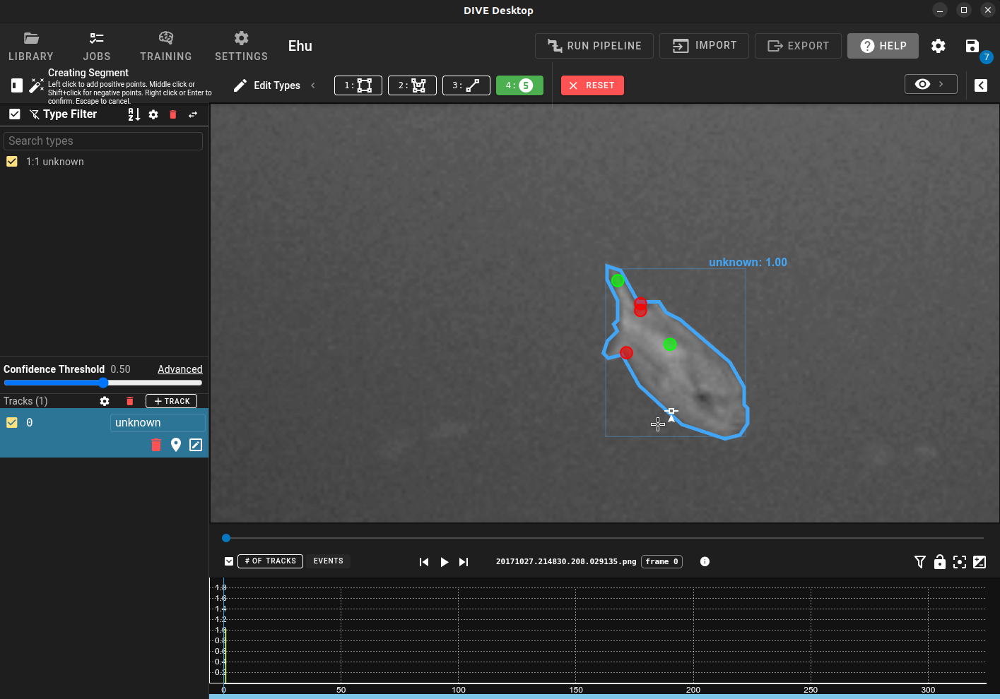

Interactive Annotation
DIVE Desktop can run interactive point-click segmentation and interactive stereo tools backed by a local VIAME Python service. The desktop implementation requires a working VIAME installation. DIVE Web runs point-prompt segmentation and stereo correspondence in the browser using ONNX models (see Web segmentation).
| Feature | Description |
|---|---|
| Interactive segmentation | Click foreground/background points to generate polygon masks (SAM-style models when available). |
| Interactive stereo | Warp annotations between stereo camera views and recompute length measurements from head/tail lines. |
See also: Multicamera and Stereo Data, Annotation Quickstart, Keyboard shortcuts.
Desktop requirements
- DIVE Desktop with a valid VIAME Install Path
- For stereo features: a stereo dataset imported with a calibration
.npzfile - GPU recommended for model load times; CPU fallback may be available depending on VIAME build
On first use, DIVE spawns a single persistent viame.core.interactive_service subprocess that loads segmentation and stereo models lazily.
Interactive Segmentation

Point-click segmentation helps you draw precise polygon regions faster than placing vertices by hand. It is available on single-camera and multicamera datasets.
Activating segmentation
- Create or select a track/detection and enter edit mode (right-click the annotation).
- Click the Segment button (magic-wand icon) in the editing bar, or press S.
- On first activation, DIVE loads the segmentation model. A loading indicator appears in the status area.
The status indicator shows instructions while segmentation is active:
- Left click — add a foreground (include) point
- Shift+click or middle click — add a background (exclude) point
- Right click or Enter — confirm and commit the polygon
- Esc — cancel and clear points (restores the previous polygon if you were editing)
Green dots are foreground points; red dots are background points.
Resetting points
While in Point (segmentation) mode, click Reset Points in the editing bar to clear prompt points and revert to the pre-segmentation polygon without leaving segmentation mode.
Multi-frame and video
- Points are tracked per frame. Switching frames saves the current frame's points and shows only the active frame's prompt dots.
- Confirming commits all frames that have valid polygons.
- On video datasets, the service receives the frame timestamp so models can seek the correct frame.
Continuous detection mode
In Detection mode with Continuous enabled, each foreground click can start a new detection. Background clicks do not spawn new detections.
Auto-populate from a new box or line
Instead of (or in addition to) point-click Segment mode, you can have DIVE segment each newly drawn box or head/tail line automatically. Open the creation settings menu and enable either toggle (Desktop only; both need the interactive segmentation service):
| Setting | Behavior |
|---|---|
| Auto-populate mask | After you draw a new box or head/tail line, DIVE runs the segmentation model and stores the resulting polygon(s) on the detection. A box is sent as the prompt and the mask is confined to it; a line is prompted with points along the line. |
| Auto-populate points | After a new box (or a confirmed point-click mask on a brand-new detection), DIVE derives head/tail keypoints from the segmentation the way VIAME keypoint pipelines do. After a new line, it tightens the bounding box to the mask. |
Manual edits made while auto-populate is still running are kept; DIVE does not overwrite geometry you changed. Failures are reported in the UI; a successful mask is kept even if head/tail extraction fails.
With interactive stereo Auto-compute location on other camera enabled, the stereo-mapped copy of a new box or line gets the same auto-populate pass once the transfer succeeds. When auto-populate mask is on, a new box is preferably mapped through its mask rather than by warping box corners alone.
Stereo datasets
On stereo datasets, confirming a segmentation on one camera can warp the resulting polygon to the paired camera when interactive stereo auto-compute is enabled.
Note
If the primary segmentation model fails to load, DIVE may fall back to a GrabCut-based method with reduced accuracy. Check the desktop debug console (Ctrl+Shift+I) for details.
Interactive Stereo
Interactive stereo assists annotation on two-camera stereo datasets with a calibration file. It is controlled from the Stereo Settings section of the creation settings menu (gear icon in the track list or bottom panel).

| Setting | Behavior |
|---|---|
| Update lengths when modified | When you edit a head/tail line on a detection linked across both cameras, DIVE recomputes stereo measurements (length, midpoint, range, RMS). |
| Auto-compute location on other camera | When you draw an annotation on one camera and the other camera has no detection yet, DIVE warps it to the other view using dense stereo disparity. |
Enabling either toggle loads the interactive stereo service. A loading dialog appears while models initialize.
Warped annotations
Stereo-warped head/tail lines become normal editable line annotations. If you manually edit a warped line, DIVE locks it from automatic re-warping so your corrections are preserved.
Auto-created head/tail connector lines use the standard head/tail line key and behave like manually drawn lines.
Multicamera workflow improvements
- One-click cross-camera edit — selecting a linked track on one camera selects it on all camera views and enables editing.

- Create on any camera — start a new linked detection from any camera view without breaking the multicam workflow.
- Line aspect ratio — auto-warped line bounding boxes are capped at a 6:1 aspect ratio for readability.
Measurements and export
Computed lengths are stored as detection attributes (for example length) and round-trip through VIAME CSV export. The legacy VIAME length column is also populated when a length value is present.
Troubleshooting
Unable to load the interactive service
Verify your VIAME Install Path in Desktop Settings. Ensure VIAME is installed with interactive segmentation/stereo support (see VIAME installation docs). Open the debug console (Ctrl+Shift+I) and look for stderr from the interactive subprocess.
Segmentation button missing or disabled
Interactive segmentation is only available in DIVE Desktop, not the web annotator.
Stereo settings not visible
Stereo settings appear only on stereo datasets (two cameras + calibration) in DIVE Desktop.
Stereo warp did not appear on the other camera
Confirm Auto-compute location on other camera is enabled, the track is linked across cameras, and the other camera has no existing detection at that frame. Human-edited lines are not overwritten.
Curved head/tail lines
Use the existing head/tail line tool: place the two endpoints as usual, then right-click the detection to edit its existing line. Click a new location on a line segment to insert an interior vertex, or drag its small midpoint handle. Drag vertices to adjust the centerline, or select an interior vertex and use the existing Delete point action to remove it. Removing the final interior vertex restores a two-point line. Deleting a vertex keeps the remaining line in edit mode. An existing detection box stays unchanged while all vertices are inside it; moving a vertex outside expands only the necessary box edges. No additional annotation mode is needed.
The displayed line is an open polyline, ordered head to tail. Intermediate points
are saved as spine_001, spine_002, etc.; insertion and deletion renumber them.
These names describe order within a detection, not anatomical landmarks or stereo
correspondences. Other keypoints and segmentation polygons remain separate.
With stereo length updates enabled, edits clear derived measurements and trigger
fresh correspondence along the curve. Failed matches leave the measurement stale
instead of keeping an old length. Explicit user_set lengths stay locked. Curved
measurement reports curved_length, straight_length, and curvature_ratio in
addition to the usual length field; this ratio is a bend indicator, not local
curvature. Computation follows the editable polyline, retaining its corners.
Desktop dense stereo transfers points and curved lines in either direction. Right-camera edits use a separately computed, cached right-reference disparity map. The web stereo matcher also supports edits from either camera.
With automatic mapping enabled, placing or moving a named keypoint maps it to the other camera, including when that camera already has a detection. Inserting an interior line vertex maps that vertex into the nearest segment of the other line, preserving its existing vertices. Automatically mapped points can follow subsequent edits; manually edited target points are protected. Failed matches and results that arrive after either affected annotation changes are discarded. These behaviors use the existing automatic mapping option in desktop and web. Browser ONNX matching supports transfers in either direction. Both implementations rematch image locations rather than pairing equally numbered intermediate points.
Web segmentation
In Track Settings → New Track/Detection Settings, choose SAM2.1 Tiny (the default) or SAM2.1 Small under Segmentation model. Activate Segment in edit mode, or press S, and use the same positive/negative clicks and confirm/cancel controls described above. Both choices are point/box-prompt SAM2 models; Small is more accurate but needs more GPU memory.
The first use downloads the selected model from Hugging Face. Browser caching avoids downloading it again when cached files remain available. Models run locally in the browser: image pixels are not uploaded to Hugging Face. WebGPU on HTTPS or localhost is preferred; the loader tries CPU/WASM if GPU model initialization fails, and uses CPU directly for software GPU adapters. Initial encoding can be slow, especially on software graphics. Subsequent clicks reuse image embeddings; only two camera frames are retained in memory.
Both SAM2 sizes share a small bundled ONNX post-processing graph that selects the
highest-scoring candidate, resizes and unpads its logits, and returns a binary
mask at the original image size. Selecting first avoids upscaling all three
alternatives. This graph runs through ONNX Runtime/WASM and can also be used by
a desktop ONNX host; it has no DIVE or model-weight dependency. Its reproducible
exporter is VIAME’s plugins/onnx/export_sam_postprocess.py (--check validates against
an OpenCV reference). DIVE converts the resulting mask into editable polygons
and manages annotation state and stereo transfer.
Auto-populate mask segments newly drawn boxes and lines. Auto-populate
points / tighten box derives head/tail from masks, or fits a drawn line's
box to its mask. Generated head/tail uses the minimum-area convex-hull
rectangle and clips its short-edge midpoints to mask boundaries, following
VIAME's hull_extremes method. Multiple components and holes are retained.
Browser contours can differ slightly from native OpenCV contours.
For calibrated stereo datasets, enable automatic other-camera computation and length updates. DIVE uses the desktop mask-transfer rules with the selected stereo correspondence method, then runs SAM on the other camera. Each mask component supplies deep, spread-out interior points (five overall, with at least two per component). Matches with offsets inconsistent with their component are discarded. Original clicks and their positive/negative labels provide a fallback if no interior matches survive. Boxes with auto-population enabled transfer through their masks. Both cameras' geometry is finished before length is updated. Transfers with no matched prompts are rejected, as are masks whose area is more than 2.5 times larger or smaller than the source (subtracting holes). Manually edited counterparts are preserved. Reset/cancel removes the generated counterpart preview; confirming keeps it.
Fast-FoundationStereo caches one dense disparity map per frame pair/direction.
Like desktop, it samples the 90th-percentile disparity in a 7×7 neighbourhood,
using original-image pixel spacing even when the ONNX model has lower resolution.
This sampling now runs in the bundled stereo_sample.onnx graph: interpolation,
finite/positive-value filtering, border clipping, percentile selection and valid
fractions are shared numerical operations rather than DIVE-specific code. The
weight-free exporter is VIAME’s plugins/onnx/export_stereo_sampler.py (--check
validates its reference behavior). It gathers only 49 neighbours per point and
batches a line's eleven samples into one ONNX Runtime/WASM call, reusing cached
dense disparity without rerunning the network or resizing the full map. The
same graph can be used by desktop ONNX hosts; the desktop service still uses its
native sampler. Float32 arithmetic can introduce small numerical differences.
Straight measurement lines use an 11-sample disparity fit, allowing three outliers
and a 10-pixel residual; failed fits fall back to endpoint matching. Curves keep
individually transferred vertices. NCC retains its own correspondence search.
The transfer rules follow desktop defaults, but browser rectification, model
exports, and polygon rasterization can still produce different results.
Image sequences and loaded video frames are supported. Video pixels are captured at the annotation event so model loading cannot accidentally use a later frame. Tiled large-image datasets are not supported by this browser SAM path. Model switching finalizes an existing preview and discards unfinished predictions; the next click starts a fresh prompt set. Frame changes, resets, and later edits also prevent stale predictions from overwriting annotations.